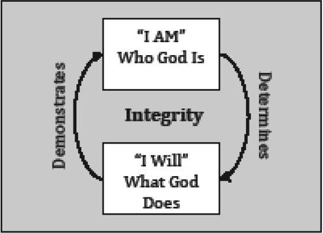

In Week 2 of our study, we learned about the integrity at the heart of God.
|  |
Who God is and what God does are in perfect harmony. God’s character determines what He does, and what He does demonstrates His character to the world. We never have to second-guess God because we know He will always act based on the goodness at His core. There is integrity—consistency—between who God is and what God does.
A similar thing can be said of us. Regardless of what kind of character we have, who we are on the inside inevitably determines our actions, and our actions demonstrate what kind of character we have.
Read Luke 6:43-45 and fill in the blanks.
“A good tree doesn’t produce bad fruit, nor does a bad tree produce good fruit. Each tree is known by its ________ _________. People don’t gather figs from thorny plants, nor do they pick grapes from prickly bushes. A __________ person produces __________ from the good treasury of the inner self, while an __________ person produces _________ from the evil treasury of the inner self. The inner self overflows with words that are spoken.” (CEB)
I don’t know about you, but when I begin to search deeply into the contents of my heart, I’m not always proud of what I find there. The more closely I look at my own motivations, the more I know that I need God to continue His transforming work in me. If I don’t turn those dark places over to Him, I know they will come to light in my actions and relationships.
The good news is that God isn’t done with me—or with you! He continues to work in our hearts throughout our lives in a process of change called sanctification, which is transformation. This transforming action means that we can grow to reflect God’s character.